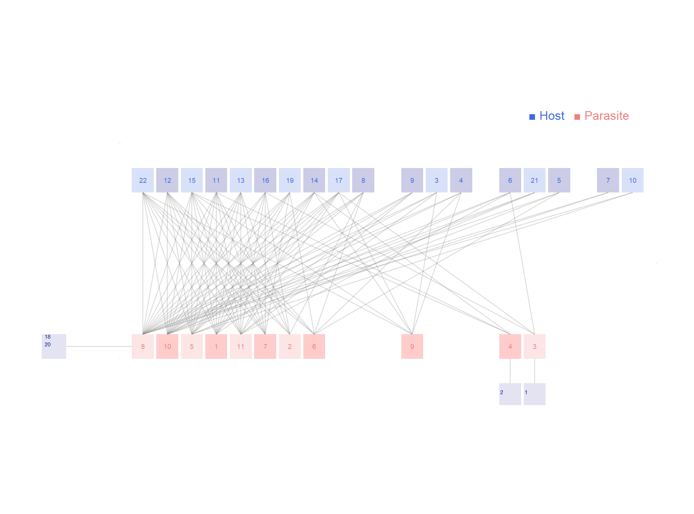

Network: RA_HP_013

Host 1 Amphipsylla.kalabukhovi, 2 Amphipsylla.schelkovnikovi, 3 Citellophilus.tesquorum, 4 Citellophilus.trispinus, 5 Coptopsylla.lamellifer, 6 Ctenophthalmus.breviatus, 7 Ctenophthalmus.dolichus, 8 Echidnophaga.oschanini, 9 Frontopsylla.semura, 10 Leptopsylla.segnis, 11 Mesopsylla.hebes, 12 Mesopsylla.lenis, 13 Mesopsylla.tuschkan, 14 Neopsylla.setosa, 15 Nosopsyllus.laeviceps, 16 Ophthalmopsylla.volgensis, 17 Oropsylla.ilovaiskii, 18 Paradoxopsyllus.repandus, 19 Rhadinopsylla.cedestis, 20 Stenoponia.conspecta, 21 Xenopsylla.conformis, 22Xenopsylla.skrjabini
Parasite
1 Allactaga elater, 2 Allactaga major, 3 Allocricetulus eversmanni, 4 Cricetulus migratorius, 5 Meriones meridianus, 6 Meriones tamariscinus, 7 Pygeretmus pumilio, 8 Rhombomys opimus, 9 Spermophilus fulvus, 10 Spermophilus pygmaeus, 11Stylodipus telum
Hadfield JD, Krasnov BR, Poulin R, Shinichi N (2013) A tale of two phylogenies: comparative analyses of ecological interactions. The American Naturalist 183(2): 174-187 Guriev